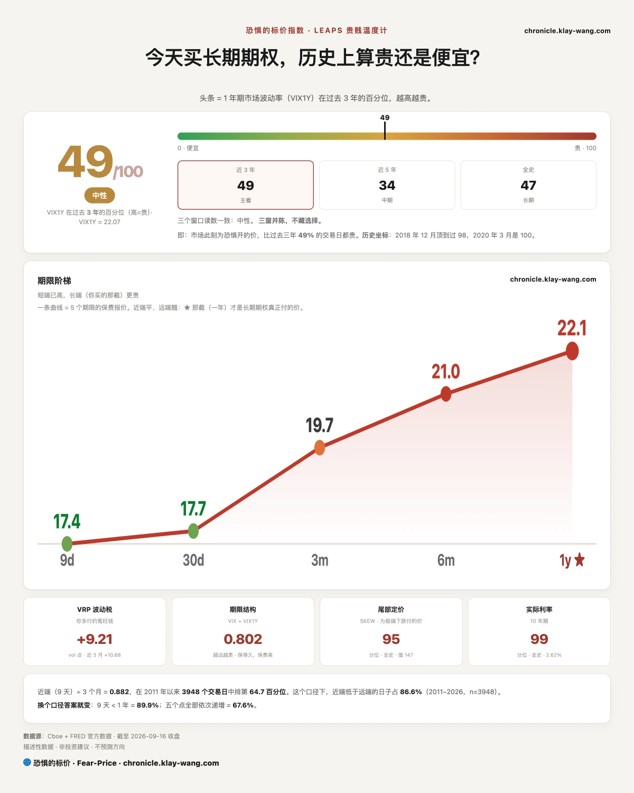
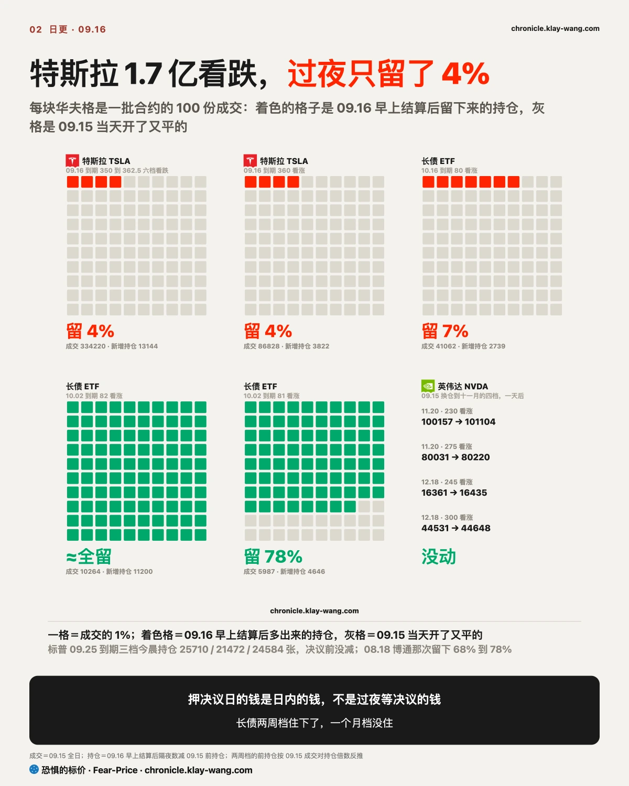
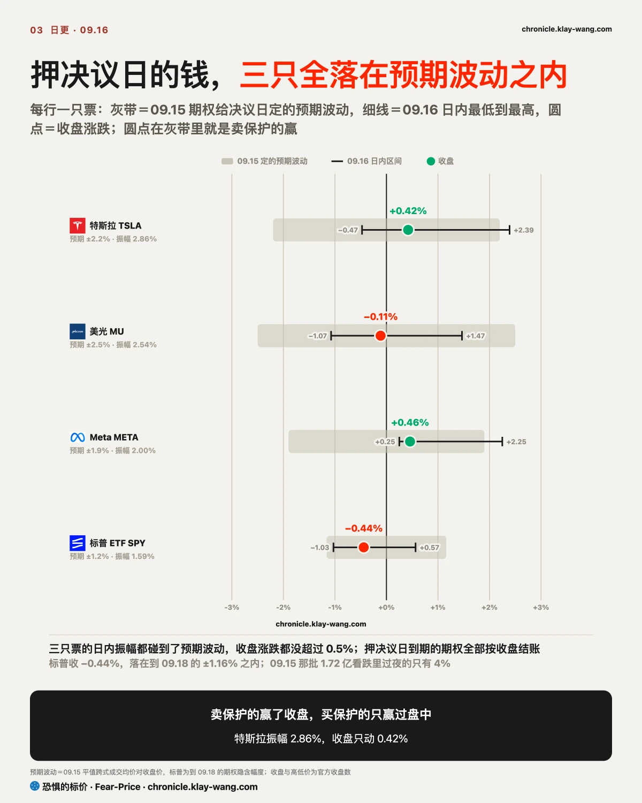
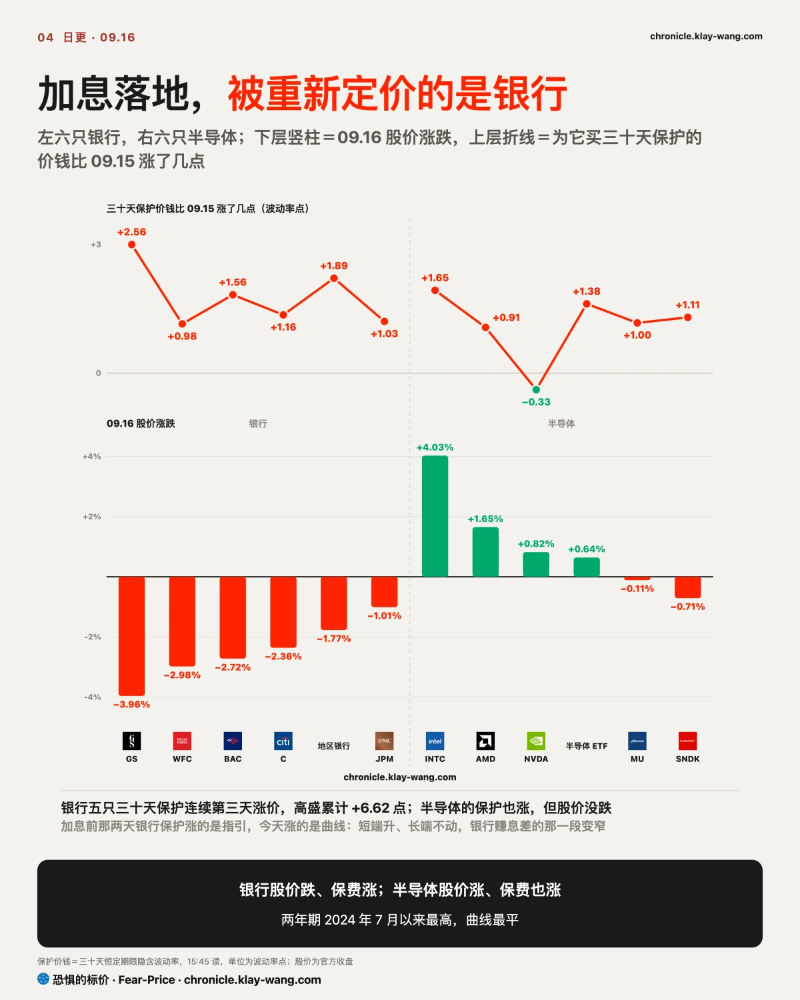
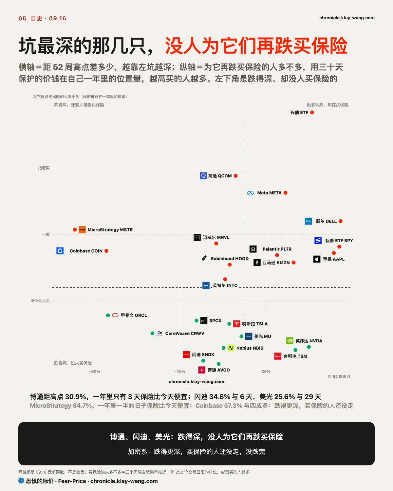
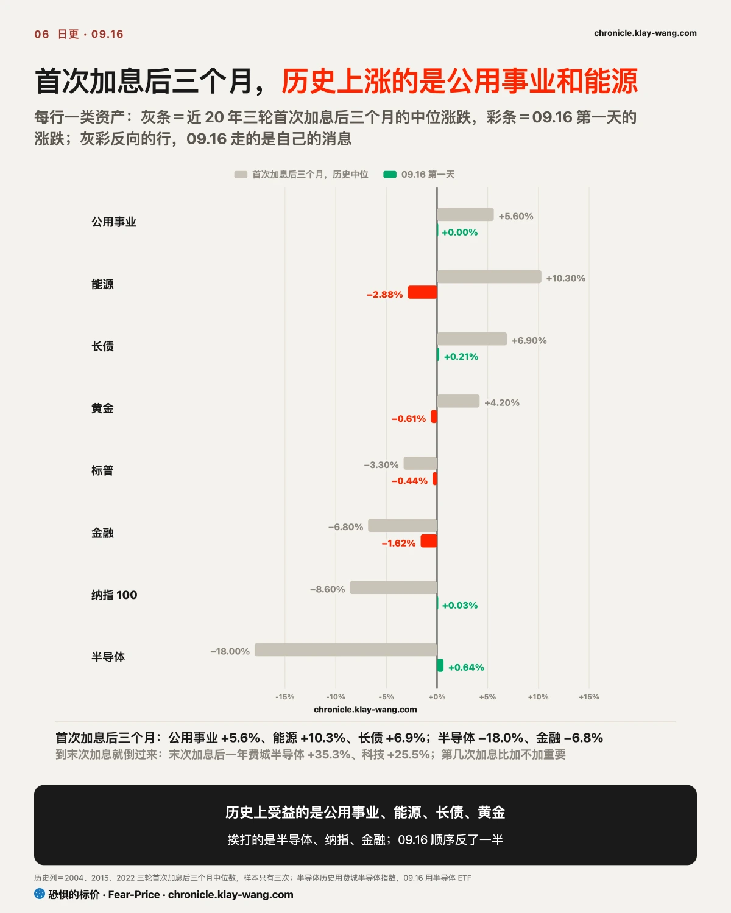

恐惧的标价指数（Fear-Price Index）· 2026-09-16 · 读数 49.3/100：一年期波动率 VIX1Y 为 22.07，处于近三年第 49.3 百分位，高即贵。逐日台账与口径 → chronicle.klay-wang.com · 转载注明：恐惧的标价指数 · Fear-Price
恐惧的标价 49.3，09.15 是 45.0。这个数说的是为一年买保险贵不贵，近三年里比今天便宜的日子已接近一半。加息落地了，一个月和一年这两档保险还在涨，市场买的是加息之后那段路的保险，不是决议这一天的。
人的情绪比钱走得快。CNN 恐贪从 28.7 掉到 26.5，2011 以来只有 17% 的日子比今天更悲观；VIX 17.71，两者相除的 K 指数 1.50，比 09.15 的 1.67 低。
K 越接近 1，说明嘴上悲观的人开始真掏钱买保护；今天还没到，要么 VIX 涨到 26.5 以上，要么恐贪掉到 17.7 以下，K 才破 1。对你的意思：现在是嘴上悲观、手上没付钱的阶段；2011 以来 K 破 1 的 39 次都是这个阶段之后才出现的，走势在 chronicle.klay-wang.com/kindex。
短期的保险在退，长期的在涨。为一次大跌买的保险（SKEW）从 152 降到 147，为利率买的保险（MOVE）从 84 降到 81；为一年买的保险涨到 49.3，离 09.15 说的 52.5 那条线差 3 个点。市场从防一次大跌，换成了防一段慢跌。上周说债市比股市更紧张，判据是 MOVE 在 76 以上、股票的保险在退；今天 MOVE 还在 76 以上，股票的保险开始涨，这条判断债市那半仍成立，股市那半在下面传导节改口。
另一页入口：chronicle.klay-wang.com/fear-price 是五档与分位窗口。

满屏的特斯拉看跌大单，今天早上还留在手里的不到 4%。33 万张成交，过夜的持仓只多了 1.3 万张，其余全是当天开当天平。这是做市商和做日内的人围着决议来回对冲，不是谁在看空特斯拉。昨天写的 1.72 亿看跌要改口：方向对了，规模读大了。你在券商 App 里看到的期权异动，绝大多数是这种钱，跟着它过夜的只有你。
真正拿着过夜的钱在两个地方。长债两周后到期的看涨几乎全留下了，押的是加息落地之后长端利率回落；押一个月的那批只留了 7%，两批人两个打算：留下的赌决议后两周内长端回落，走掉的只做决议这一天。英伟达十一月的仓一张没动，标普 09.25 的三档也都在。
决议前夜几乎没有人为决议本身买过夜的保护，被保的是决议之后的那一周和那一个月。

预期波动盘中三只都碰到了，收盘都只走了不到四分之一，两头下注的人盘中有过机会，收盘输给了卖方。
昨天期权给特斯拉定的决议日预期波动是 2.2%，美光 2.5% 最高，Meta 1.9% 最低。实际收盘三只都比预期小得多：特斯拉 +0.42%，美光 −0.11%，Meta +0.46%，最大的一个也只有预期的四分之一。盘中三只都碰到过那条线，决议出来先冲高，记者会里再跌回去，两段加起来接近零。
特斯拉六档看跌里四档归零，剩下的也只留了三分之一的价值，意思是卖决议日期权的人三只全赢，买的人只在盘中有过机会。对散户有用的只有一句：决议日的预期波动是公平价，不是便宜货，冲着必有大动去买当天到期的期权，赢要赢在盘中来回，不是赢在涨或跌。
记者会后半段的下跌还没走完，09.17 开盘才是检验：特斯拉要是补跌超过 2.2%，预期波动定对了这句就站不住，只能算对了一天。

加息日跌得最狠的是银行，高盛跌 3.96%，摩根大通 1.01% 最少。高盛开盘还涨，白天跌了 4.4%，成交量是前一天的 1.5 倍，收在全天最低的一成里，这是有人在卖，不是没人接。
加息本身会前已定价九成四，意外在记者会。沃什说不确信通胀在回落，两年期升到 2024 年 7 月以来最高，十年期几乎没动，两年与十年的差压到 6 月底以来最窄。银行借短贷长赚的就是这个差，短端升长端不动，差就窄了。地区银行跌得比大行狠，除了利差还多一个原因：加息要是一串，先出坏账的是它们的客户。手里有地区银行的，利差和坏账两个都得盯。
为银行买保护的价钱连涨三天，今天涨得最多。换成钱：给 100 股高盛买一个月保险今天约 4170 美元，比上周五多 370，这三天股价跌了 9%。前两天涨的理由是美国银行周一的指引，今天涨的是曲线，期权市场在曲线动之前就给银行加了保费。09.14 立的那条今天成立：卖保护的人改价改的是银行，不是芯片。当时定的判据是美光三十天保护过 62 才算芯片被重新定价，今天 58.43，没过。
半导体是另一种走法。英特尔涨 4.03% 是芯片里最多的，AMD、英伟达也涨，芯片股的保险也在涨。股价涨保费也涨，是买股票的人同时在买保险，25 个基点改不了买芯片的人的计划；银行是股价跌保费涨，是有人在卖。要是 09.18 前银行的保护价钱回到 09.15 以下，这一节就只是决议日的一天行情，收回。

加息落地当天，债市的保险便宜了，股市的保险涨了，两边从今天起分开走。市场和美联储的分歧不在加不加，在加了之后谁受伤：银行和小盘股被定成受伤方，长债被定成受益方。原因是同一句话，沃什说不确信通胀在回落：短端听到的是年内再加一次，长端听到的是通胀会被压住。长端相信美联储压得住通胀，所以长债反而有人买；股市担心的是被压住的还有增长。
债市这边，长债 ETF 的看涨成交是看跌的五倍多，比昨天更一边倒，行权价还往上挪了两档。这批钱押的是这一轮利率见顶，时间是两周到一个月，幅度是长债涨 2% 到 4%。为利率买保护的价钱（MOVE）降到 80.73，是 09.08 以来最大的单日降幅，债市自己也认为最颠簸的一段过去了。但现货没有期权那么坚决：长债 ETF 盘中冲高全部回吐，收在全天最低。明天现货再卖一天，买看涨的人就算早了；拿着长债 ETF 的，先看现货守不守 80，再看期权多乐观。
股市这边相反，三周来一直在退保险的人开始加保。全市场成交最大的四批期权，全是小盘股 ETF 十月到期的看跌，行权价离收盘 4% 到 5%，意思是买的人防的是一次像样的回调，不是崩盘；小盘股 ETF 已经比 8 月中的高点低 7%，这批保险保的是从这里再跌一截。标普三十天保护回到 14 以上，这个数是给标普买一个月保险的年化价钱，14 是 8 月以来的分界。买的是十月，保的是小盘股，因为一串加息里最先受伤的是浮动利率借钱的小公司。
09.15 期写利率的压力跳过了股票，当时定了两个推翻条件：标普三十天保护过 14，一年期保险读数过 52.5。今天第一个到了，触发它的是美联储确认了一个周期，不是收益率的某个点位；第二个差 3 个点没到，所以 09.15 那条收回一半。要是 09.18 前标普三十天保护回到 14 以下，今天这批保险就只是季度期权集中到期日（09.18）前的对冲，这一节收回。
不给操作建议，只把价格换算成你能自己判断的数。
手里有银行的：今天跌是因为两年期和十年期的差被压到 6 月底以来最窄，不是哪家的业绩，所以一份好财报救不了。盯 10 月再加息的概率，今天 56.5%，比决议前高；它再往上走，银行还得挨。
手里有长债的：加息落地反而是长债的好日子，看涨成交 22.8 万张押两周到一个月内长端回落。但现货收在全天最低，期权比现货乐观；80 守住了第一天，09.17 再守住，昨天那条就站住。
手里有半导体的：股价涨保费也涨，买的人一边买一边配保险，比上周谨慎。英特尔涨 4.03% 靠的是海力士合作传闻，海力士说尚未确定，消息不坐实这批钱走得比来得快。
手里有小盘股的：全市场成交最大的四批期权都是小盘股十月的看跌，行权价离收盘 4% 到 5%。有人在为加息成串替你那一类买十月的保险，他们防的是一次像样的回调。
想在坑里买博通、闪迪、美光的：它们跌得最深，没人为再跌买保险，所以保险最便宜，博通一个月约股价 4.1%，一年里只有 3 天更便宜。历史上这种加息之后先震一下再涨，震的那一下有保险接着。
什么都没拿在等进场点的：和今天最像的那 7 次加息，三个月后多半涨，但一个月内都先震过一下，等进场的人多半先等来那一震。今天多出来的信息是有人开始为下跌买保险了。

